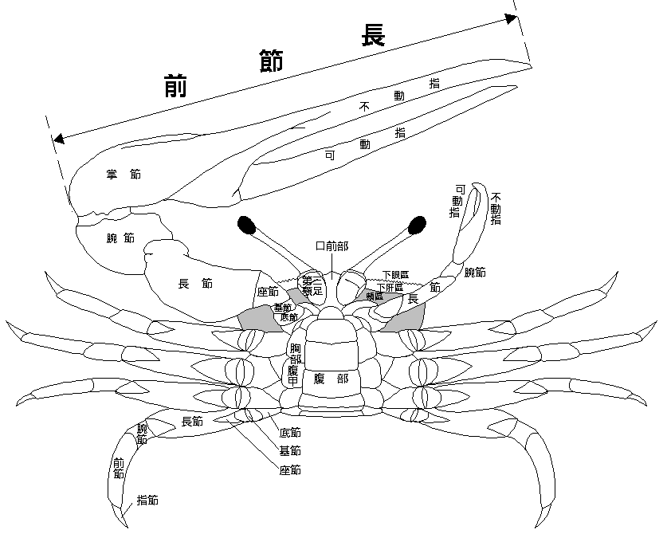
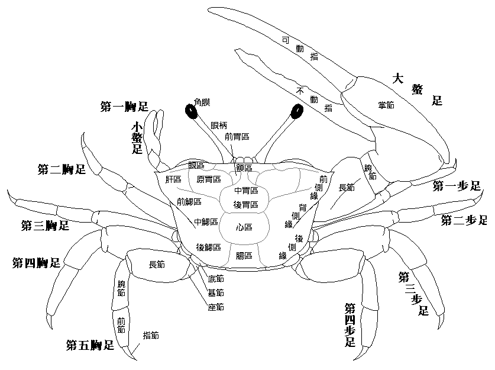

五股溼地
招潮蟹在動物分類學上被歸類沙蟹科。招潮蟹的眼睛具有細長的柄，很像火柴棒，雄蟹擁有巨大的左螯或右螯，一大一小，大螯的外觀極像一把大剪刀，專門用於打鬥和求偶；雌性的雙螯細小，這是招潮蟹的特徵，用於刮取泥地表面的基質入口，在口中篩選分離食物與基質，再將基質由口中取出置於地面，像是吐出來的糞粒，因此稱為擬糞。
當牠面對潮水招手，彷佛洶湧而來的潮水就是牠揮手招來的，非常可愛。所以中國人稱牠為『招潮蟹』，是來自三國時期的稱呼。招潮蟹的英文名稱為 fiddler crabs，意即「提琴手蟹」或「琴師蟹」，此名稱除了形容其巨大的螯足類似小提琴之外，以小螯清潔大螯的行為，更神似拉小提琴的動作。
 